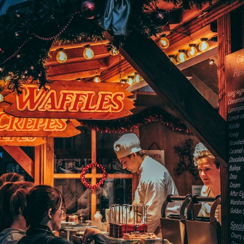

Подорож за горизонт
Відкривайте нові місця, знайомтеся з природою та збирайте враження, які залишаться з вами надовго.
Читати історію
Відкривайте нові місця, знайомтеся з природою та збирайте враження, які залишаться з вами надовго.
Читати історію
Кожна вулиця має свій характер. Знайдіть час, щоб роздивитися деталі, архітектуру та неспішний ритм старого міста.
Дізнатися більше
